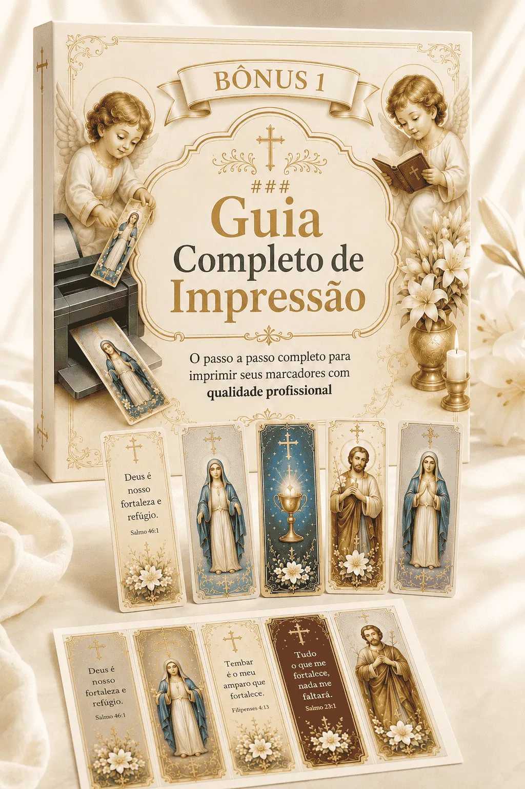
🎁 Bônus 01
Guia Completo de Impressão
Tudo que você precisa saber para imprimir com qualidade: papel ideal, gramatura recomendada, como plastificar, recortar direitinho e outras dicas essenciais.
Cada marcador tem 5 x 15 cm e traz imagens de Maria, Jesus, santos e anjos, com trechos bíblicos selecionados — perfeitos para Bíblia, missal e leitura espiritual. No Premium, +16 modelos extras.
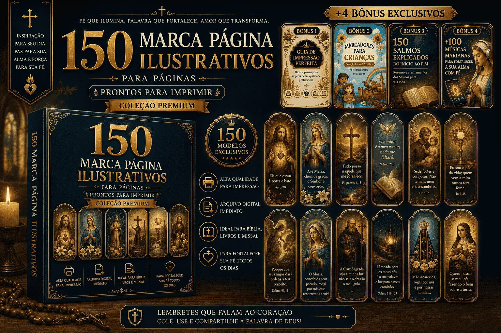
Relatos de quem já imprimiu e está usando na Bíblia, no missal e em outros livros
Nada de complicação, imprima, recorte e leve para sua leitura espiritual. Rápido, fácil e pronto para o dia a dia.
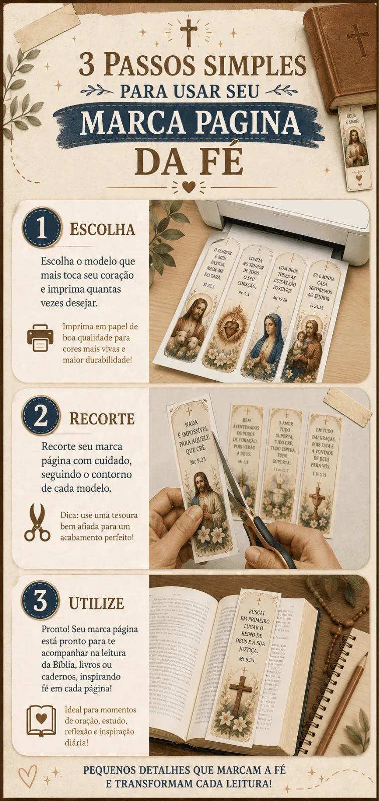
Pensado especialmente para fazer parte da sua caminhada espiritual, dia após dia.
Acompanhe capítulos e versículos com um toque de beleza em cada página.
Perfeito para presentear em crismas, comunhões e reuniões com os catequizandos.
Uma lembrança de fé para padrinhos, madrinhas, mães e pessoas queridas.
Leve para retiros, celebrações e grupos de oração da igreja.
Com ilustrações refinadas, cores marcantes e detalhes em dourado, cada peça foi feita para inspirar sua leitura espiritual.
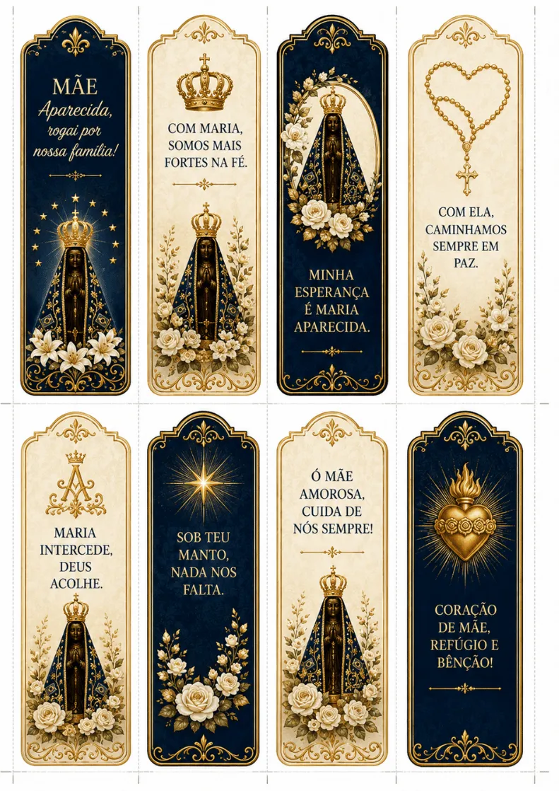
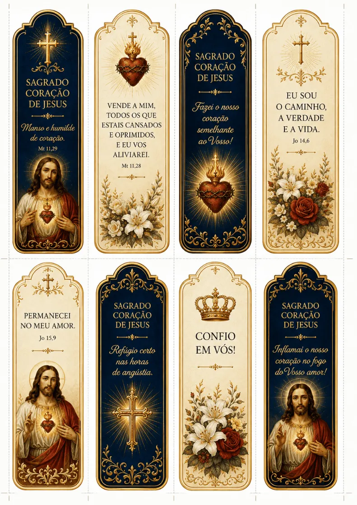
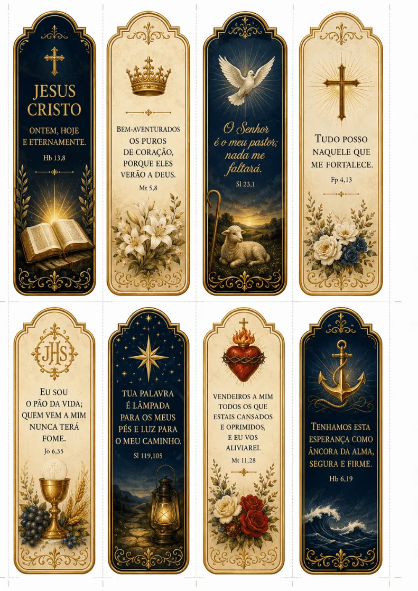
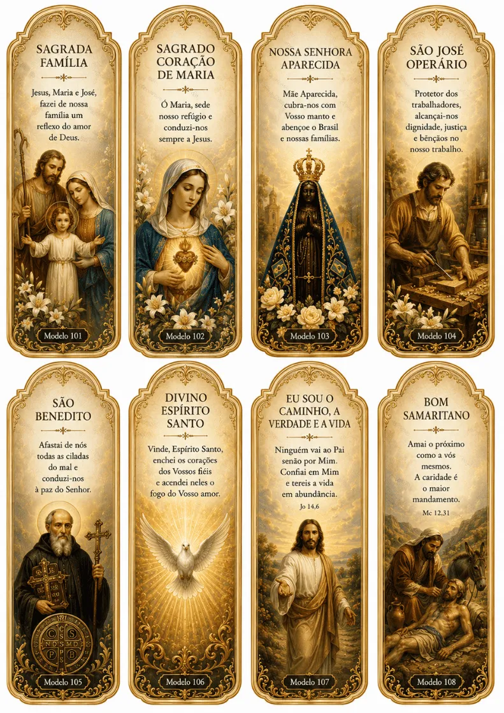
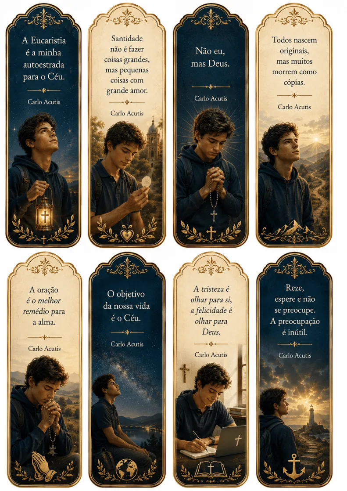
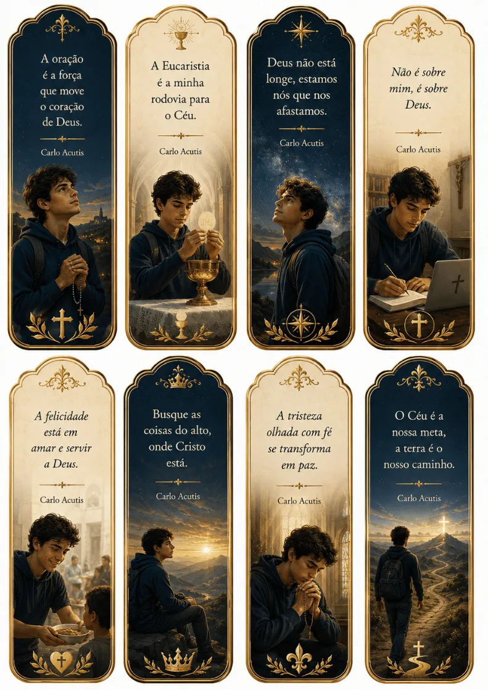
Reunidos em 8 categorias devocionais, para acompanhar você em cada fase da oração.
São 150 marcadores no total — é só imprimir, recortar e começar a usar.
150 marcadores premium em alta resolução, mais bônus exclusivos para imprimir, presentear e fortalecer sua fé no dia a dia.
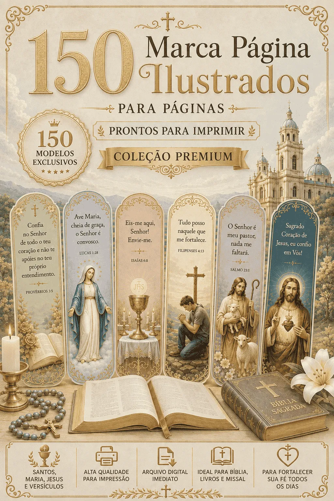
Coleção premium com 150 modelos no formato 5 x 15 cm, entregue em arquivo digital para você baixar, imprimir e usar sempre que quiser.
2 clássicos + 2 no nível super premium
Bônus inclusos

Tudo que você precisa saber para imprimir com qualidade: papel ideal, gramatura recomendada, como plastificar, recortar direitinho e outras dicas essenciais.
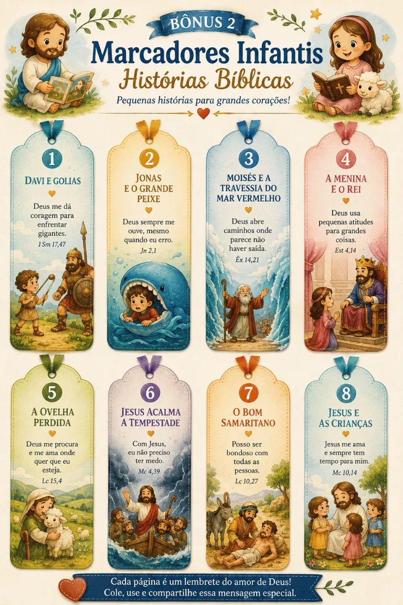
16 marcadores especiais para crianças com ilustrações fofas e versículos das principais histórias da Bíblia: Arca de Noé, multiplicação dos pães, nascimento de Jesus e muito mais.
+ 2 bônus super premium
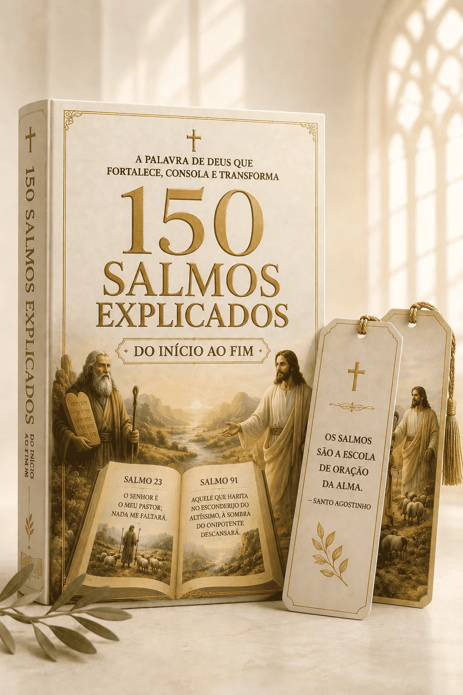
Mais de 700 páginas dedicadas a explicar, verso a verso, todos os 150 Salmos — com uma linguagem simples e profunda ao mesmo tempo. Um complemento perfeito para sua jornada com os marcadores.
Uma curadoria especial com mais de 100 músicas escolhidas para acalmar o coração — para orar nos dias difíceis, buscar paz e sentir a presença de Maria em cada momento.
⚠️ Antes de continuar, veja a oferta mais completa
9 em cada 10 pessoas escolhem o Pacote Completo — os 4 bônus saem por apenas R$ 18 a mais.
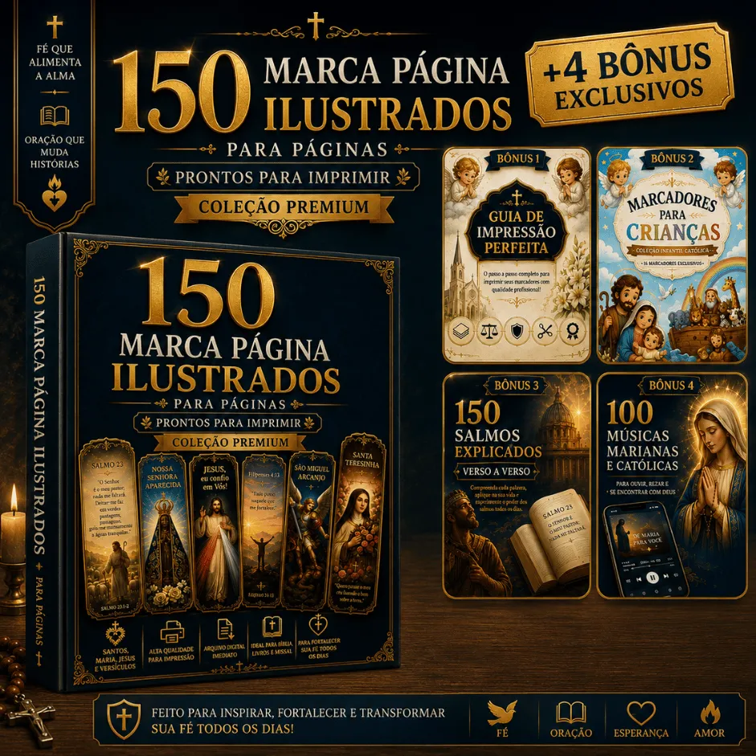
Salmos Explicados do Início ao Fim
+700 páginas de conteúdo completo
+100 Músicas Marianas para fortalecer a sua Alma com Fé
Mais de 15 horas de louvor e oração
Se não te agradou, seguindo os termos de uso, devolvemos via PIX rapidamente. Tudo simples e sem cobranças.
Acesso imediato. Garantia de 7 dias. 150 marcadores premium na sua Bíblia ainda hoje.
QUERO MEUS MARCADORESSó agora, por tempo limitado:
Válido apenas nesta tela